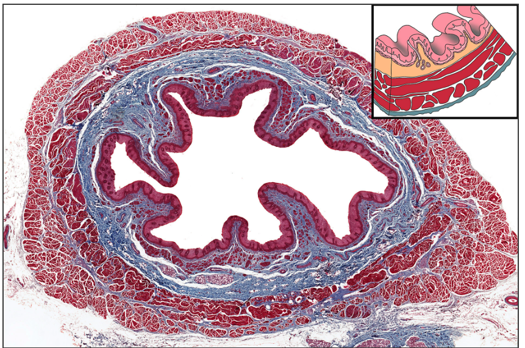
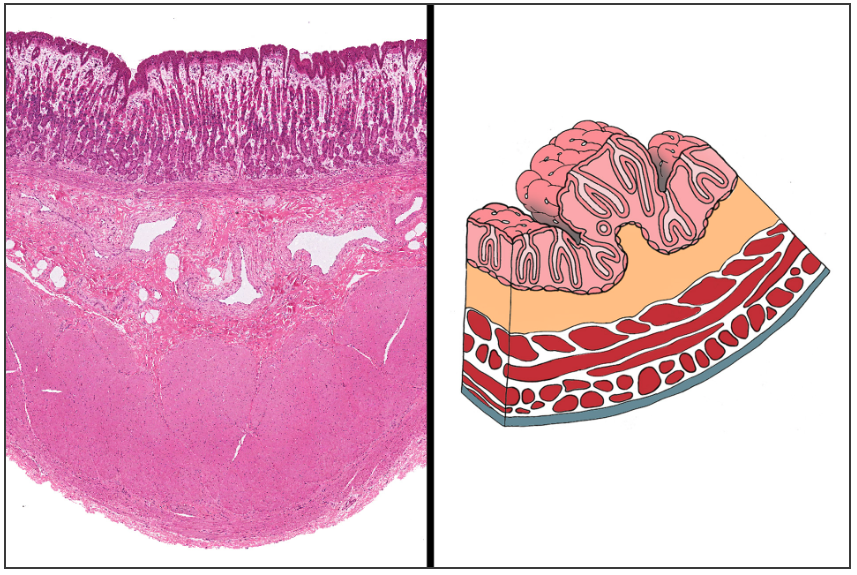
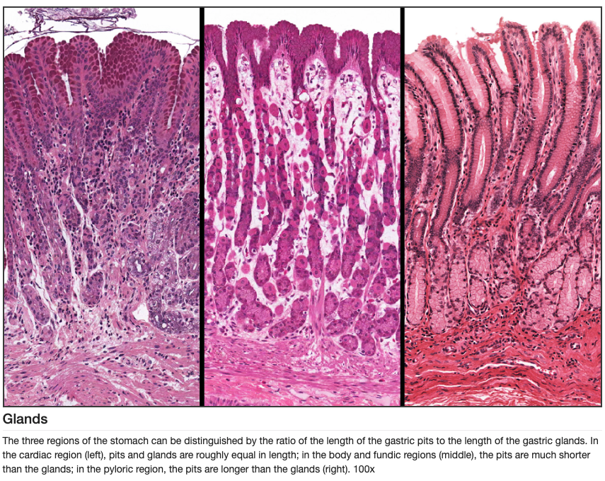
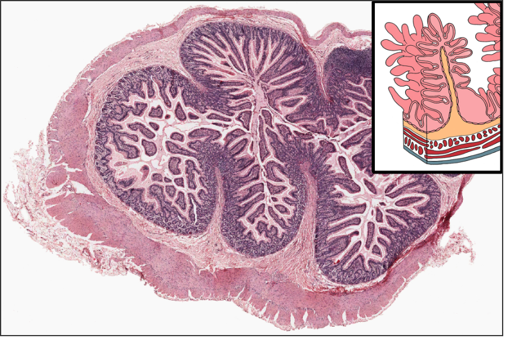
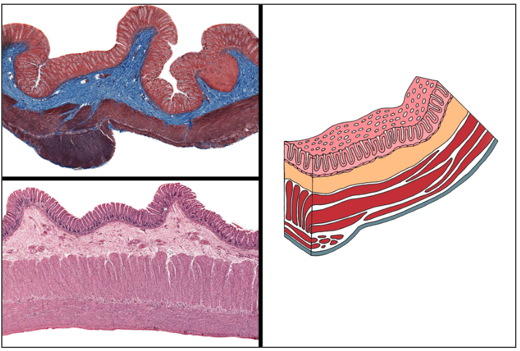

GI Histology
Title
What does the GI track look like histologically?
Theo Couris
CPR Week 1 Dr. Shaw
04/02/2026
Learning Objectives
- Identify the 4 major layers of the GI tract and their histological characteristics.
- Differentiate between various types of mucosa found in the GI tract.
- Recognize the structural features that distinguish each region of the GI tract, and the functions of each (aka, why they have certain unique characteristics).
Overview
The four layers to know are: mucosa, submucosa, muscularis externa, and serosa/adventitia. The mucosa contains epithelium, lamina propria, and muscularis mucosae. The submucosa contains larger blood vessels, lymphatics, and the Meissner (submucosal) plexus, while the muscularis externa contains inner circular and outer longitudinal smooth muscle with the Auerbach (myenteric) plexus between them.

- Stratified squamous epithelium protects against trauma in the oral cavity and esophagus.
- Simple columnar epithelium dominates the stomach and intestines because secretion and absorption (enterocytes) become the main jobs.
- Villi are present in the small intestine and absent in the stomach and large intestine.
Esophagus
The esophagus is lined by nonkeratinized stratified squamous epithelium, which protects against injury from swallowed food. Its mucosa lacks villi and gastric pits, helping distinguish it from stomach and intestinal tissue. Submucosal mucous glands are characteristic and more abundant in the lower esophagus (and are more abundant in the esophagus than the stomach).
The muscularis externa is also important: the upper third is skeletal muscle, the middle third is mixed skeletal and smooth muscle, and the lower third is smooth muscle. The esophagus is mostly covered by adventitia rather than serosa (bottom portion has serosa and is intraperitoneal) because much of it lies in the thorax (retroperitoneal-ish). In pathology, the lower esophagus is important because chronic acid exposure (GERD) can drive Barrett's esophagus, meaning histology shows simple columnar glandular mucosal tissue.


Stomach
The stomach is lined by simple columnar epithelium composed of surface mucous cells. Unlike the intestine, it has gastric pits and glands but no villi. The gastric mucosa varies by region. Cardia contains mostly mucous glands, fundus and body contain oxyntic glands with parietal and chief cells, and the antrum/pylorus has deeper pits with more mucous cells and G cells.
Parietal cells are large and eosinophilic and secrete hydrochloric acid and intrinsic factor. Chief cells are more basophilic and secrete pepsinogen. The rugae are gross folds involving mucosa and submucosa, while the muscularis externa has an added inner oblique layer that helps with mixing.



Small Intestine
The small intestine is optimized for absorption, so its mucosa shows plicae circulares, villi, and crypts of Lieberkuhn. The epithelium is simple columnar with absorptive enterocytes and goblet cells. Microvilli on enterocytes form the brush border.
The three segments can be separated histologically. The duodenum has Brunner glands in the submucosa. The jejunum has prominent plicae circulares and lacks Brunner glands and Peyer's patches. The ileum contains Peyer patches, which are lymphoid nodules extending from lamina propria into submucosa.
- Key clue for small intestine: villi
- Duodenum: Brunner glands in submucosa.
- Ileum: Peyer patches


Large Intestine
The large intestine specializes in water absorption and stool formation. It lacks villi and instead shows long, straight crypts lined by simple columnar epithelium with very abundant goblet cells.
The outer longitudinal layer of the muscularis externa is condensed into three taeniae coli in much of the colon. The appendix shares colonic-type mucosa with crypts and no villi, but it contains especially prominent lymphoid tissue.
- No villi, many goblet cells, and straight crypts are the classic triad.
- Crypts are typically more uniform and parallel than in the stomach.
- Appendix resembles colon but has much more lymphoid tissue.


Quiz
Question 1
What part of the GI tract is shown in this image?

Question 2
What part of the GI tract is shown in this image?

Question 3
What part of the GI tract is shown in this image?

Question 4
What structures are located in the submucosa as seen here?
Question 5
What cell is shown in this image?
/case/detail_images/c8891_detail.jpg)
Sources
Images sourced from MedCell GI Histology Lab, Pathology Outlines Normal Histology, MinnState GI Histology, and Pathology Case Paneth Cell.
Most images and the information used are from Digital Histology. It is a great source and I highly recommend it.
I also used Chat GPT and Codex for help programming.